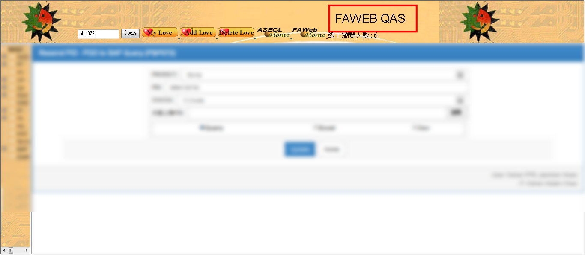
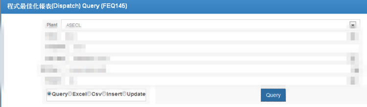
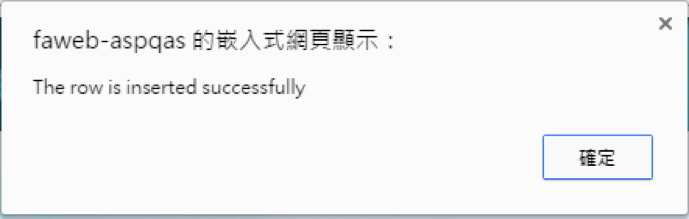
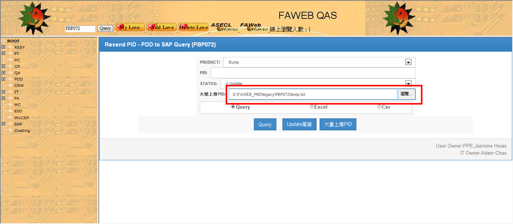
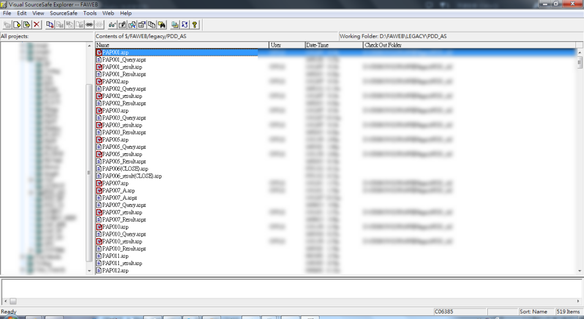
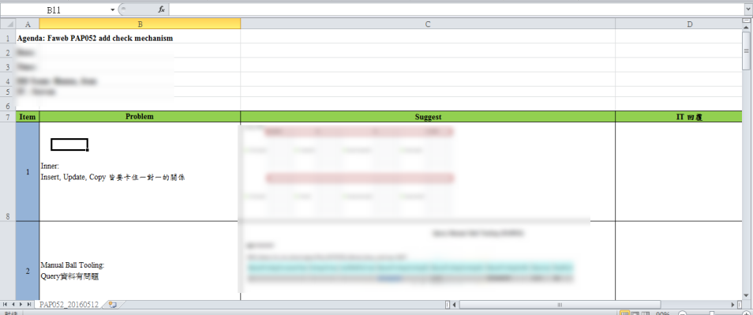

實習目標
1. 修改ASP/VB Script寫成之網頁2. 解決User需求
3. 網頁升級(ASP網頁轉換成ASP.NET網頁 / 32位元轉64位元)
4. 熟悉語言間之轉換
工作中所扮演的角色
目前扮演隸屬於IT部門MES 1組裡再細分之PDD(參數資料定義)組實習生的角色， 由工程師依照近期需求與困難程度交付我來協助處理，其中多以網頁修改有關，有時候，當工程師手上有太多專案的話，我也會幫 忙處理一些相較於其他工作較為基本的事務，可能是繁瑣，也可能是簡單的。網頁使用語言包含ASP/ASP.NET/VB Script/JavaScript等， 另外也會撰寫SQL語法來連結Oracle內的資料。工作報告與成果
1.系統介紹
目前我在Parameter Data Define(參數資料定義)組內是負責WEB呈現的部分，使用語言包含ASP/ASP.NET/VB Script/JavaScript等，另外也會撰寫SQL語法來連結Oracle內的資料。
而我們撰寫好的程式，會先放到測試區(QAS)讓user測試，這個測試區的網頁我們稱它為FAWEB，待user測試好沒有問題之後，才會開單請專門控管程式上線人員，將程式上至正式區。
FAWEB是一個模擬正式區的環境，方便人員做報表的新增、刪除、查詢、更新等功能，也可以自己訂定我的最愛等等。

我們報表的權限是手動更新的，利用下面這個系統來設定Group或是單支報表權限，當我們在寫各報表權限控管等程式功能時，便會使用到此系統來幫助我們進行不同權限的測試。
2.使用之系統工具
(1) Microsoft Visual Studio 2012
(2) Oracle SQL Developer
(3) WinMerge
(4) NotePad++
3.實習期間完成之進度

4.工作項目
(1)新建網頁
●以FEQ145 System舉例
根據User 需求建立新Web(以Coding Standard架構建立) Dispatch for S/S 程式最佳化管理
需求功能：
I. Query 全部條件 / 部分條件

II. Insert / Update卡控必填欄位 卡控
III. Insert 功能

IV. Update 功能(卡控:只能更新RESULT和REASON欄位) 點選欲UPDATE資料前方之update按鈕
V. Delete 功能
(2)User需求與網頁升級綜合
●以PBP072 System舉例
User反應需要大量上傳txt檔來update PID編碼比較方便，不用一筆一筆資料上傳。而我和工程師討論完後，決定先把程式從vb改寫
成C#後再來處理user需求會比較好。
Step 1:網頁升級(vb轉C#)
vb頁面版型:
C#頁面版型: Query時頁面更加人性化，表格有似excel功能。
修改之程式:
Step 2:處理user需求
新增大量上傳PID功能，此功能僅限財務使用。

上傳成功，會分別顯示成功和失敗共幾筆，以及分別是哪些料號。 修改之程式:
Result頁面:
(3)Usre需求修改
工程師會收到來自user的SR(System Request)，依照近期需求與困難度評估後，再將需求指派給實習生。
●以PAP052 System舉例
User會將需求或是網頁bug呈現在ppt上

依照user需求修改程式，一種需求或問題可能要修改一支以上的程式。(下圖為為完成此需求所修改到之程式)
自己有修改到的內容都必須要加註解和版本說明。
修改完成後，將程式上線到測試區，並且自行做測試和截圖，再製作UTR(User Test Report)報告結果與使用說明給user。
User測試無誤，即可將程式存放在VSS，再由專人於排定時間將程式上線至正式區。

(4)網頁升級(VB轉C#)
●Coding Standard
每位工程師所寫的程式邏輯和方式都不會是相同的，而公司的報表是很龐大和長期的，多年下來，由於太多人修改撰寫，倒置程式語
法複雜而凌亂，為了方便後續交接和避免其他人花費太多時間在了解上一個人所寫的程式，因此有部門開始製作coding standard來
將網頁由ASP翻為ASP.NET，以利日後其他人在翻新網頁時有一致的範本套用，如次一來便能縮短修改程式的時間。
(5)User退單之錯誤修改
當User測試完有錯誤的話，就會再開單給我們處理錯誤的地方。


自我評估
進入日月光半導體製造股份有限公司已經將近四個月的時間了，比起剛進公司的我， 在經過一系列的新人訓練、程式撰寫練習、實作經驗累積以及同事耐心指導之下，面對一些新的問題或是專業的術語，因為有了初步的概念， 我已經不像當初那樣的畏懼，也更懂得善用資源，補足我不了解的部分，對於一些比較困難的問題，我也比從前更懂得如何下手解決，而我在 看程式碼的速度加快了，也比較能將我所想的程式邏輯撰寫出來，更能從與同事協同完成一項工作，進步到能獨立完成指派任務，不只分攤了 同事的工作量，也增加了我更多的信心以及成就感，而當在同事們忙不過來時，我也能幫助他們彙整資料和查看程式碼。暑假期間，工程師也較放心讓我修改一些比較大型且複雜程式的需求，雖然一開始有點挑戰，即使每天都在寫程式，但是我並不會感到厭煩，也發現我的邏輯越來越清晰，對於Web的撰寫也越是感興趣。
學習心得
一開始進入公司，我們對於公司的系統等都不是很認識，因此公司特別安排了一系列的新人 訓練，使我們對整個公司架構和營運流程有一定的概念後，才讓我們真正開始在自己的部門工作。而我的主管希望我現階段以協助系統網頁呈現的 部分為主，於是工程師便會指派一些網頁修改或是網頁升級的工作給我，網頁修改的部分，主要是針對user需求來做程式撰寫，在每一次修改需求 時，因為我對於公司各個報表主要是負責什麼事項或是該連結哪裡的資料庫都不是很熟悉，工程師都會很細心的向我解釋，並且和我一起討論該如何撰寫這支程式，我認為修改程式 最困難的部分，是要先讀懂之前每位工程師接連修改下來的程式碼，才會知道今日我要從哪個地方開始下手，而網頁升級為Visual Basic改寫成C#， 由於我們公司 內部有許多支不同的報表，為了方便日後工程師維護，於是訂定了一支程式來做為範本，我們稱它為Coding Standard，而公司成立了很久，有些比 較舊的程式幾乎都是用Visual Basic撰寫居多，不過近期公司希望將網頁升級，並用比較嚴謹的C#來改寫。在公司使用的網頁環境雖然和學校所學 相同，但是在學校做網頁時，我們是學習從工具箱直接拉元件等，不過在公司內，大家都是直接打程式碼，如此下來整個網頁的彈性也會比較高， 更方便日後維護和修改。在公司開始實習後的這些日子裡，我才真正體會到書上所學幾乎僅是最基本的概念，工作上常常會遇到很多沒遇過的問題，是要好好的認真思考 才能得到解答的，書本上的知識有限，很多時候透過實作來會發現自己的盲點在哪裡，能有這次實習的機會真的很好，另外，與同事之間的互動是非常重要的，在與同事 交流時，他們都會很熱情的將自己曾經在程式撰寫上遇到的情況與我分享，告訴我如果遇到什麼樣的問題該如何解決，我也從中吸取到了很多的知識和經驗，知道了很多 好用的應用程式、電腦應用的小技巧、各種資料庫資料篩選語法或是Visual Basic/C#語法上撰寫的其他方式，雖然所做的工作有複雜也有簡單的，但在得知這些豐富的資 訊後，工作上更是得心應手，也能更快速的讀懂以前工程師的程式版本，然而，學習是永無止境的，利用實作經驗精進自己之外，還要找機會多多充實其他方面的技巧才 行。進入業界，我邊工作邊學習，除了鍛鍊我自己之外，還了解到了一間公司的營運模式，在我所待的IT這個部門，員工數將當得多，也有許多部門，這裡就像是一個小 型的社會，在人際關係方面，更是能學習到一些待人處事的小技巧，非常有趣。

給系上的建議
選擇就讀資訊管理學系的大家，不盡然真的熱愛這個科系，儘管喜歡資管系，也不一定清楚資管系 未來出入和自己該做些什麼，因此我覺得系上能在大三時能給予我們實習的機會，是非常難得的，可以讓我們在學生時代就進入業界當實習生，提早 體驗職場生活，這些合作公司除了資訊類的之外，還是有一些不同的選擇，而做為實習生的好處，就是可以邊做邊學習，因此壓力比起正職的員工來 的小，不過也能早點適應職場生活，學習對自己負責任，也可以提早知道自己適不適合這個行業。在進入業界實習後，我深刻的瞭解到，知識不是老師灌輸給你的，而是要自己去挖掘和學習，系上雖然有安排程式課程，但老師能給我們的僅是一些 概念，程式撰寫是要不斷的練習才會進步，如果自己不會去找程式來練習，那每一次的專題製作都要好好的把握，雖然老師不會要求專題要做的多麼 複雜，僅是要我們針對課程上所學來應用，但每一次的實作練習都是促使我們進步的墊腳石，因為在每一次實作的過程，我們或多或少會遇到瓶頸， 從困難中學習解決之道，知道問題點，才能使自己進步，課本和學校所給予的知識有限，唯有自己額外的精進和付出，才是成功的要領。